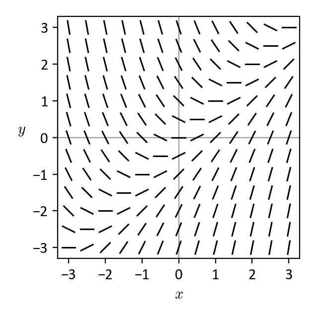

Paper first, then check in. Give yourself 15 minutes for the five problems on paper, no calculator, the way the real test runs. Then open each card. If you already have an answer, press Check my answer from paper: one try. Right, and you can skip to Look back for a faster route or a variation. Not right, or not sure, and the walk-through takes it one step at a time: Understand, Plan, Carry out, Look back.
Every wrong choice has a story. The test writers build the wrong answers out of the slips people actually make. When you pick one here, the page tells you which slip leads there, so you can spot it next time.
Your place is saved in this browser, so you can stop and come back. Bring the one card that bugged you most to our check-in.
Goal: Find the rate of change of \(f\) in one direction by dotting the gradient with a unit vector. Gradients and directional derivatives are the multivariable questions the MFT asks most, along with the fact that \(\nabla f\) points the way \(f\) increases fastest.
Goal: Find the order of each coordinate, then find when both return to \(0\) at the same time. Orders of elements in \(\mathbb{Z}_n\) and in direct products come up on almost every MFT, often together with Lagrange’s theorem or the question “is this group cyclic?”

Goal: Match the picture to an equation by finding where the slopes are zero, then checking the sign at one point. Slope fields are the MFT’s favorite way to ask about differential equations without solving one. The same two moves (zero-slope curve, then a sign test) also sort out phase lines.
Goal: Decide each statement by matching it to a theorem with exactly the right hypotheses, or breaking it with a simple sequence. Bolzano–Weierstrass and the Monotone Convergence Theorem are the two real-analysis facts the MFT uses most. The trap is nearly always a missing hypothesis.
Goal: Write the area in terms of one side, using the fence length, and maximize it. Every MFT has an applied optimization problem or two. The work is almost always in the setup: one constraint, one quantity to maximize, one variable.